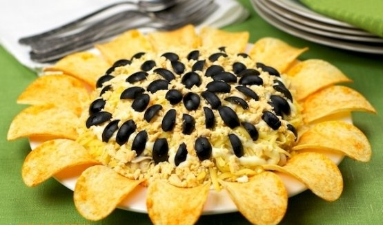

Салат "Подсолнух"
Салат в виде подсолнуха станет ярким украшением любого стола. Таким образом можно украсить любой слоеный салат. Я еще украсила салат «Божьей коровкой», сделанной из половинки помидорки черри. Голова и точки на спинке — маслины. Из указанного количества ингредиентов получается 6–8 порций.
Ингридиенты:

300 г куриного филе
400 г консервированной кукурузы
3 яйца
200 г маринованных шампиньонов
200 г моркови
лук порей или репчатый
маслины (по желанию)
чипсы (овальной формы)
соль
майонез
растительное масло
Приготовление
Морковь отварить до готовности, остудить, почистить.
Куриное филе мелко нарезать.
На растительном масле пожарить филе до готовности (около 10 минут), посолить.
Морковь натереть на мелкой терке.
Яйца натереть на мелкой терке.
Грибы мелко нарезать.
Лук нарезать полукольцами.
Если Вы используете репчатый лук, его необходимо мелко нарезать, залить кипятком на 10 минут, затем воду слить.
На дно тарелки выложить филе, смазать майонезом.
На филе выложить морковь, смазать майонезом.
На морковь выложить грибы, смазать майонезом.
На грибы выложить лук.
На лук выложить яйца, смазать майонезом.
На яйца выложить кукурузу.
По кругу воткнуть чипсы.
Как вариант, салат можно украсить половинками маслин.